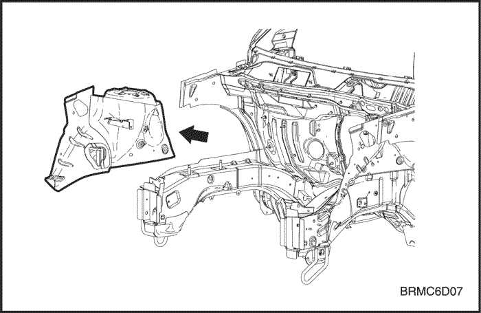

ПЕРЕДНИЙ
ПОПЕРЕЧИНА
ОБЩЕЕ ОПИСАНИЕ
Поперечина
соединена с передней колесной аркой и лонжероном переднего отсека. Она
служит основанием для крепления фар и других деталей и поддерживает
жесткость передней части кузова. Обращать особое внимание на
перекручивание и параллельность и проверить установку соответствующих
частей при сварке.


ПРОЦЕДУРА РЕМОНТА
- Снимите соответствующие части.
- Капот и передний бампер.
- Фары и крыло.
- Двигатель, радиатор и связанные с ними детали.
- Испаритель кондиционера и связанные с ним детали.
- И т.д.
- Начерно выпрямите и выправьте поврежденное место.
- Прежде чем снимать поперечину, осмотрите повреждения передней колесной арки и лонжерона переднего отсека. Прежде чем снимать поврежденную поперечину, начерно вытяните и выправьте ее с помощью правильного стенда.
- С помощью струбцин надежно прикрепите автомобиль к правильному стенду за точки крепления.
- Удерживайте кузов в горизонтальном положении.
- Поднимите кузов домкратами и установите страховочные опоры в четырех обозначенных точках внутренней панели боковины.
- Отрежьте и отделите поперечину.
- Накерните точки вокруг точек сварки.
- Специальным инструментом высверлите сварные точки на передней колесной арке и лонжероне переднего отсека.
- Отрежьте поперечину пневматическим зубилом, оставив на месте сварочные кромки.
- Выровняйте и зашлифуйте неровности от оторванных сварных точек дисковой шлифовальной машиной.
- Отрихтуйте поврежденные смежные части.
- С помощью молотка и оправки отрихтуйте поврежденные участки передней колесной арки и лонжерона.
- Выровняйте сварочные кромки с помощью молотка и оправки.
- Заварите высверленные отверстия.
- Установите поперечину.
- Зачистите свариваемый участок поперечины шлифовальной машиной от краски до стального листа.
- Зажмите правую и левую сторону зажимными устройствами, как показано.
- Временно приварите зажатые секции.
- Измерьте передний отсек по диагоналям.
- Измерьте передний отсек по диагоналям следящим измерителем или выпуклой линейкой, чтобы проверить его на перекручивание или изгиб.
- Временно установить крыло, фары и капот, проверить зазоры и различия уровней.
- Выполните основную сварку.
- Приварите поперечину точечной сваркой, как показано на рисунке.
- Сначала выполнить пробную сварку и проверить качество сварки.
- Увеличьте количество точек на 20% для свариваемых областей.
- Отшлифуйте места сварки.
- С помощью молотка и оправки выровняйте кромки передней колесной арки и лонжерона переднего отсека так, чтобы они плотно прилегали к поверхности поперечины.
- Нанесите грунтовочное покрытие.
- При необходимости нанесите грунтовочное покрытие на поврежденные участки передней колесной арки и лонжерона переднего отсека.
- Нанесите краску.
-
Внимание! При нанесении лакокрасочных покрытий обеспечьте вентиляцию. Большинство лакокрасочных материалов содержат вредные при вдыхании или проглатывании вещества. Прежде чем открывать емкость с лакокрасочным материалом, прочесть этикетку.Внимание! Избегайте контакта с кожей. При окраске использовать респиратор установленного образца, перчатки, средства защиты глаз и соответствующую одежду.Внимание! Лакокрасочные материалы огнеопасны. Хранить их в безопасном месте, беречь от искр и огня, не курить.
- Установите соответствующие детали.
- Двигатель, радиатор и связанные с ними детали.
- Испаритель кондиционера и связанные с ним детали.
- Фары и крылья.
- Капот, решетка радиатора и бампер.
- И т.д.
- Установка производится в порядке, обратном снятию.
- Проверка и регулировка
- Проверьте зазоры и различия уровней.
- Проверьте открывание и закрывание замка капота.
- Отрегулируйте направление света фар.
- Проверьте работу всех систем.
- Проверьте на утечки бензина, масла и жидкостей.

Примечание: Проверьте посадку двери; будьте осторожны, чтобы не вытянуть поврежденную область сильнее, чем нужно.
Примечание: Высверливая отверстия, будьте осторожны, чтобы не просверлить переднюю колесную арку и лонжерон переднего отсека.
Внимание! Во избежание травм глаз надевайте защитные очки при шлифовке, резке или полировке.

Внимание! Во избежание травм глаз надевайте защитные очки при шлифовке, резке или полировке.
Внимание! Во избежание травм глаз и ожогов пользуйтесь при сварке каской, рукавицами и защитной обувью установленного образца.
Примечание: Проследите, чтобы правая и левая поперечины были выровнены одна относительно другой.

Внимание! Во избежание травм глаз и ожогов пользуйтесь при сварке каской, рукавицами и защитной обувью установленного образца.

Примечание:
После установки всех соответствующих частей нанести консистентную
смазку на движущиеся части, залить охлаждающую жидкость, заправить
кондиционер хладагентом и т.п.
Примечание: Для проверки работы систем использовать указанную контрольную таблицу.
ПЕРЕДНЯЯ КОЛЕСНАЯ АРКА
ОБЩЕЕ ОПИСАНИЕ
- CO2
Передняя
колесная арка выполнена за одно целое с держателем амортизатора.
Поэтому замена этой детали влияет на регулировку передних колес. При
установке использовать направляющий шаблон или проконтролировать
положение по размерам, указанным в таблице ремонта кузова. При
приваривании арки необходима особая осторожность.


ПРОЦЕДУРА РЕМОНТА
- Снимите соответствующие части.
- Со стороны пассажира внизу щитка передка находятся особенно огнеопасные детали.
- Приборная панель, жгут проводки, относящиеся к ним детали и т.п.
- Начерно вытяните и выправьте поврежденные места приблизительно до исходной формы.
- С помощью захватов прикрепить автомобиль к правильному стенду за горизонтальные швы контактной сварки.
- Прежде чем отрезать поврежденные части, вытяните их до первоначальной формы.
- Не вытягивайте больше нужного.
- Вытяните и выправьте поврежденные участки задней колесной арки и нижней части щитка передка, переднюю стойку и другие части.
- Снимите верхний лонжерон панели передней колесной арки
- Накерните точки вокруг точек сварки.
- Специальным инструментом высверлить сварные точки на стойке колесной арки.
- Заровняйте места сварки МИГ дисковой шлифовальной машиной.
- С помощью зубила отделите приваренный край от передней стойки кузова и колесной арки.
- Снимите грунтовочное покрытие и герметизирующую ленту.
- Нагрейте грунтовочное покрытие и герметизирующую ленту в местах сварки колесной арки и лонжерона переднего отсека с помощью газовой горелки и отделите грунтовочное покрытие и ленту стальным шпателем.
- Отрежьте и отделите переднюю колесную арку.
- Накерните точки вокруг точек сварки на лонжероне переднего отсека и задней колесной арки.
- Специальным инструментом высверлить сварные точки по накерненным местам.
- Отрезать переднюю колесную арку пневматическим зубилом, оставив на месте сварочные кромки.
- Выровняйте и зашлифуйте неровности от оторванных сварных точек дисковой шлифовальной машиной.
- ОБРАТИТЕ ВНИМАНИЕ:
- Если повреждения затронули только переднюю часть, отрезать поврежденную часть передней колесной арки, обрезать новую панель по оставшейся части и сварить обе части встык по внутренним краям.
- Отрихтуйте поврежденные смежные части.
- Заварите высверленные отверстия.
- С помощью молотка и оправки отрихтуйте поврежденные части лонжерона переднего отсека, задней колесной арки и других панелей.
- Выровняйте сварочные кромки с помощью молотка и оправки.
- Установите новую панель передней колесной арки.
- Дисковой шлифовальной машиной зачистите от краски до стального листа обе стороны привариваемых участков передней и задней колесной арки и лонжерона переднего отсека.
- Закрепите лонжерона переднего отсека зажимными устройствами и струбцинами.
- Зафиксируйте поперечину зажимными устройствами.
- Временно приварите зажатые секции.
- Измерьте передний отсек по диагоналям.
- Измерьте передний отсек по диагоналям следящим измерителем или выпуклой линейкой, чтобы проверить его на перекручивание или изгиб.
- Временно установите крыло и капот, проверьте зазоры и различия уровней.
- Выполните основную сварку.
- Сварить сколько возможно при установленном направляющем шаблоне.
- Сначала выполните пробную сварку и проверьте качество сварки.
- Выполните сварку.
- Увеличьте количество точек на 20% для свариваемых областей.
- Наложите герметизирующую ленту.
- Наложите герметизирующую ленту. См. раздел 9, "Уплотнение, замазка и шумоизоляция".
- Приварите верхний лонжерон панели передней колесной арки.
- Приварите верхний лонжерон панели передней колесной арки точечной сваркой, как показано на рисунке.
- В окрестности дверных петель используйте дуговую сварку МИГ или газовую сварку.
- Отшлифуйте места сварки.
- С помощью молотка и оправки выровняйте кромки задней колесной арки и лонжерона переднего отсека так, чтобы они плотно прилегали к поверхности передней колесной арки.
- Наложите герметизирующую ленту.
- Наложите герметизирующую ленту на соединенные внахлест поверхности.
- Нанесите грунтовочное покрытие.
- Нанести грунтовочное покрытие на внутренние поверхности передней и задней колесной арки и лонжерона переднего отсека.
- Нанесите краску.
-
Внимание! При нанесении лакокрасочных покрытий обеспечьте вентиляцию. Большинство лакокрасочных материалов содержат вредные при вдыхании или проглатывании вещества. Прежде чем открывать емкость с лакокрасочным материалом, прочесть этикетку.Внимание! Избегайте контакта с кожей. При окраске использовать респиратор установленного образца, перчатки, средства защиты глаз и соответствующую одежду.Внимание! Лакокрасочные материалы огнеопасны. Хранить их в безопасном месте, беречь от искр и огня, не курить.
- Установите соответствующие детали.
- Жгут проводки, приборная панель и относящиеся к ним детали.
- Части пассажирского салона.
- Части, которые устанавливаются при установке поперечины.
- И т.д.
- Установка производится в порядке, обратном снятию.
- Проверка и регулировка
- Проверьте положение переднего колеса.
- Проверьте зазоры и различия уровней.
- Проверьте открывание и закрывание замка капота.
- Отрегулируйте направление света фар.
- Проверьте работу всех систем.
- Проверьте на утечки бензина, масла и жидкостей.
Примечание: Проверьте состояние двери и петель.
Внимание! Во избежание травм глаз надевайте защитные очки при шлифовке, резке или полировке.

Внимание! Во избежание травм глаз надевать защитные очки при шлифовке, резке или полировке.


Внимание! Во избежание травм глаз надевайте защитные очки при шлифовке, резке или полировке.
Примечание: Рекомендуется использовать направляющие шаблоны.
Внимание! Во избежание травм глаз и ожогов пользуйтесь при сварке каской, рукавицами и защитной обувью установленного образца.

Внимание! Во избежание травм глаз и ожогов пользуйтесь при сварке каской, рукавицами и защитной обувью установленного образца.

Примечание:
После установки всех соответствующих частей нанести консистентную
смазку на движущиеся части, залить охлаждающую жидкость, заправить
кондиционер хладагентом и т.п.
Примечание: Для проверки работы систем использовать указанную контрольную таблицу.
ВЕРХНЯЯ ПАНЕЛЬ КОЖУХА
ОБЩЕЕ ОПИСАНИЕ
- Герметизация точечной сварки
Верхняя
панель кожуха соединена со щитком передка. При установке используйте
направляющий шаблон или проконтролируйте положение по размерам,
указанным в таблице ремонта кузова. При приваривании арки необходима
особая осторожность.

ПРОЦЕДУРА РЕМОНТА
- Снимите соответствующие части.
- Части, которые снимаются при снятии верхней панели кожуха.
- Стеклоочиститель, ветровое стекло, жгут проводки, относящиеся к ним детали и т.п.
- Начерно вытяните и выправьте поврежденные места приблизительно до исходной формы.
- С помощью захватов прикрепить автомобиль к правильному стенду за горизонтальные швы контактной сварки.
- Прежде чем отрезать поврежденные части, вытяните их до первоначальной формы.
- Не вытягивайте больше нужного.
- Снимите грунтовочное покрытие и герметизирующую ленту.
- Нагреть грунтовочное покрытие и герметизирующую ленту в местах сварки поврежденных частей с помощью газовой горелки и отделить грунтовочное покрытие и ленту стальным шпателем.
- Отрежьте и отделите верхнюю панель кожуха.
- Накерните точки вокруг точек сварки на колесной арке и других связанных частях.
- Специальным инструментом высверлить сварные точки по накерненным местам.
- Отрежьте передний лонжерон пневматическим зубилом, оставив на месте сварочные кромки.
- Выровняйте и зашлифуйте неровности от оторванных сварных точек дисковой шлифовальной машиной.
- Отрихтуйте поврежденные смежные части.
- Заварите высверленные отверстия.
- Установите новую верхнюю панель кожуха.
- Зачистите свариваемый участок верхней панели кожуха шлифовальной машиной от краски до стального листа.
- Установите и зафиксируйте верхнюю панель кожуха зажимными устройствами.
- Временно приварите зажатые секции.
- Выполните основную сварку.
- Сварить сколько возможно при установленном направляющем шаблоне.
- Сначала выполните пробную сварку и проверьте качество сварки.
- Увеличьте количество точек на 20% для свариваемых областей.
- Наложите герметизирующую ленту и шумоизоляцию. См. раздел 9, "Уплотнение, замазка и шумоизоляция".
- Нанести грунтовочное покрытие на соединение и соединенные внахлест участки передней части пола, нижней части лонжерона и внутренней части передней и задней колесной арки.
- Нанесите краску.
- Установите соответствующие детали.
- Очистите пассажирский салон.
- Стеклоочиститель, ветровое стекло, жгут проводки, приборная панель и относящиеся к ним детали.
- И т.д.
- Установка производится в порядке, обратном снятию.
- Проверка и регулировка
- Проверьте зазоры и различия уровней.
- Проверьте работу всех систем.
- Проверьте на утечки бензина, масла и жидкостей.
- Осмотрите пассажирский салон на предмет протечек.
Примечание: Снимите в зависимости от того, какая часть повреждена.
Внимание! Будьте внимательны, чтобы при нагревании не сжечь детали внутри пассажирского салона.
Примечание: Если предстоит также заменить колесную арку, отделять ее от переднего лонжерона не обязательно.
Внимание! Во избежание травм глаз надевайте защитные очки при шлифовке, резке или полировке.

Внимание! Во избежание травм глаз и ожогов пользуйтесь при сварке каской, рукавицами и защитной обувью установленного образца.
Внимание! Во избежание травм глаз надевайте защитные очки при шлифовке, резке или полировке.
Внимание! Во избежание травм глаз и ожогов пользуйтесь при сварке каской, рукавицами и защитной обувью установленного образца.

Внимание! Во избежание травм глаз и ожогов пользуйтесь при сварке каской, рукавицами и защитной обувью установленного образца.
Внимание!
При нанесении лакокрасочных покрытий обеспечьте вентиляцию. Большинство
лакокрасочных материалов содержат вредные при вдыхании или
проглатывании вещества. Прежде чем открывать емкость с лакокрасочным
материалом, прочесть этикетку.
Внимание!
Избегайте контакта с кожей. При окраске использовать респиратор
установленного образца, перчатки, средства защиты глаз и соответствующую
одежду.
Внимание! Лакокрасочные материалы огнеопасны. Хранить их в безопасном месте, беречь от искр и огня, не курить.
Примечание:
После установки всех соответствующих частей нанести консистентную
смазку на движущиеся части, залить охлаждающую жидкость, заправить
кондиционер хладагентом и т.п.
Примечание: Для проверки работы систем использовать указанную контрольную таблицу.
ЛОНЖЕРОН ПЕРЕДНЕГО ОТСЕКА
ОБЩЕЕ ОПИСАНИЕ
Лонжерон
переднего отсека соединен с колесной аркой и поперечиной и служит
основанием для крепления передней подвески, двигателя, коробки передач и
других узлов. Поэтому замена этой детали влияет на регулировку передних
колес и обеспечивает жесткость передней части кузова. При установке
используйте направляющий шаблон или проконтролируйте положение по
размерам, указанным в таблице ремонта кузова. При приваривании арки
необходима особая осторожность.

ПРОЦЕДУРА РЕМОНТА
- Снимите соответствующие части.
- Части, которые снимаются при снятии поперечины и передней колесной арки.
- Со стороны пассажира внизу щитка передка находятся особенно огнеопасные детали.
- Приборная панель, жгут проводки, относящиеся к ним детали и т.п.
- Начерно вытяните и выправьте поврежденные места приблизительно до исходной формы.
- С помощью захватов прикрепить автомобиль к правильному стенду за горизонтальные швы контактной сварки.
- Прежде чем отрезать поврежденные части, вытяните их до первоначальной формы.
- Если просто отрезать поврежденную часть лонжерона переднего отсека, предварительно не вытянув начерно поврежденный участок, это затруднит ремонт соседних частей.
- Не вытягивайте больше нужного.
- Снимите грунтовочное покрытие и герметизирующую ленту.
- Нагреть грунтовочное покрытие и герметизирующую ленту в местах сварки поврежденных частей с помощью газовой горелки и отделить грунтовочное покрытие и ленту стальным шпателем.
- Отрежьте и отделите лонжерон переднего отсека.
- Накерните точки вокруг точек сварки на колесной арке и других связанных частях.
- Специальным инструментом высверлить сварные точки по накерненным местам.
- Отрезать лонжерон переднего отсека пневматическим зубилом, оставив на месте сварочные кромки.
- Выровняйте и зашлифуйте неровности от оторванных сварных точек дисковой шлифовальной машиной.
- Отрихтуйте поврежденные смежные части.
- Заварите высверленные отверстия.
- Отрихтовать колесную арку и другие поврежденные части и выровнять сварочные кромки с помощью молотка и оправки.
- Отрежьте новый лонжерон переднего отсека по месту и установите колесную арку и поперечину.
- Отрежьте новый лонжерон переднего отсека ручной ножовкой, чтобы затем приварить его встык.
- Дисковой шлифовальной машиной зачистите от краски до стального листа обе стороны привариваемых участков лонжерона переднего отсека и колесной арки.
- Прижмите новый лонжерон переднего отсека к оставшимся частям зажимными устройствами и плоскогубцами.
- Установите домкрат под конец лонжерона переднего отсека и подоприте его; проверьте размеры, чтобы проконтролировать правильность установки.
- Установите и зафиксируйте поперечину зажимными устройствами.
- Временно прихватите зажатую секцию сваркой.
- Выполните основную сварку.
- Сварить сколько возможно при установленном направляющем шаблоне.
- Точечной сваркой приварите колесную арку к краю лонжерона переднего отсека и передней панели.
- Сначала выполните пробную сварку и проверьте качество сварки.
- Увеличьте количество точек на 20% для свариваемых областей.
- Заровняйте сварной шов на сваренном встык лонжероне переднего отсека дисковой шлифовальной машиной.
- Изготовьте ребро жесткости по местам соединения лонжерона переднего отсека встык и приварите ребро жесткости к местам соединения лонжерона переднего отсека сваркой МИГ.
- Отшлифуйте места сварки.
- Выровнять места газовой сварки или сварки МИГ дисковой шлифовальной машиной.
- С помощью молотка и оправки выровняйте кромки колесной арки и лонжерона переднего отсека так, чтобы они плотно прилегали.
- Наложите герметизирующую ленту. См. раздел 9, "Уплотнение, замазка и шумоизоляция".
- Наложить герметизирующую ленту на места соединения нижней части щитка передка и панели пола.
- Нанесите грунтовочное покрытие. См. раздел 10, "Предупреждение коррозии".
- Нанести грунтовочное покрытие на соединение и соединенные внахлест участки нижней части лонжерона переднего отсека и внутренние поверхности передней и задней колесной арки.
- Нанесите краску.
- ПРЕДОСТОРОЖНОСТЬ
- При нанесении лакокрасочных покрытий обеспечьте вентиляцию. Большинство лакокрасочных материалов содержат вредные при вдыхании или проглатывании вещества. Прежде чем открывать емкость с лакокрасочным материалом, прочесть этикетку.
- Избегайте контакта с кожей. При окраске использовать респиратор установленного образца, перчатки, средства защиты глаз и соответствующую одежду.
- Лакокрасочные материалы огнеопасны. Хранить их в безопасном месте, беречь от искр и огня, не курить.
- Нанесите антикоррозионные средства. См. раздел 10, "Предупреждение коррозии".
- Нанесите антикоррозионные средства.
- Установите соответствующие детали.
- Очистите пассажирский салон.
- Жгут проводки, приборная панель и относящиеся к ним детали.
- Части пассажирского салона.
- Компоненты шасси.
- Двигатель, радиатор и связанные с ними детали.
- Испаритель кондиционера и связанные с ним детали.
- Фары и крылья.
- Капот, решетка радиатора и бампер.
- И т.д.
- Установка производится в порядке, обратном снятию.
- Проверка и регулировка
- Проверьте зазоры и различия уровней.
- Проверьте открывание и закрывание замка капота.
- Отрегулируйте направление света фар.
- Проверьте работу всех систем.
- Проверьте на утечки бензина, масла и жидкостей.
- Осмотрите пассажирский салон на предмет протечек.
Примечание: Снимите в зависимости от того, какая часть повреждена.
Примечание: Проверьте состояние двери и петель.
Внимание! Будьте внимательны, чтобы при нагревании не сжечь детали внутри пассажирского салона.
Примечание: Если предстоит также заменить колесную арку, отделять ее от лонжерона переднего отсека не обязательно.
Внимание! Во избежание травм глаз надевайте защитные очки при шлифовке, резке или полировке.

Внимание! Во избежание травм глаз и ожогов пользуйтесь при сварке каской, рукавицами и защитной обувью установленного образца.
Внимание! Во избежание травм глаз надевайте защитные очки при шлифовке, резке или полировке.
Примечание:
Для правильной установки рекомендуется использовать направляющие
шаблоны; проверьте параллельность лонжерона переднего отсека и передней
колесной арки.

Внимание! Во избежание травм глаз и ожогов пользуйтесь при сварке каской, рукавицами и защитной обувью установленного образца.
Примечание:
После установки всех соответствующих частей нанести консистентную
смазку на движущиеся части, залить охлаждающую жидкость, заправить
кондиционер хладагентом и т.п.
Примечание: Для проверки работы систем использовать указанную контрольную таблицу.
ПЕРЕДНЯЯ СТОЙКА
ОБЩЕЕ ОПИСАНИЕ
- Герметизация точечной сварки
Передняя
стойка является частью внутренней панели боковины. Она соединена с
крышей, ветровым стеклом, петлями дверей и каркасом пола и играет важную
роль как опора для передней части кабины. Крепление передней стойки
определяет положение ветрового стекла и передней двери. Установить
крыло, дверь и ветровое стекло при временно закрепленной передней стойке
и проверить зазоры и различия уровней.

ПРОЦЕДУРА РЕМОНТА
- Снимите соответствующие части.
- Капот, решетка радиатора и передний бампер.
- Дверь и крыло.
- Стеклоочиститель, облицовка рамы ветрового стекла и ветровое стекло.
- Уплотнитель и обивка стойки.
- Панель приборов и жгут проводов.
- Ковровое покрытие и т.д.
- Начерно выпрямите и выправьте поврежденное место.
- Прежде чем снимать верхний лонжерон панели передней колесной арки и переднюю стойку, осмотрите повреждения колесной арки и крыши.
- Прежде чем снимать верхний лонжерон панели передней колесной арки и поперечину, начерно вытяните с помощью правильного стенда и выпрямите поврежденную переднюю стойку.
- Снимите верхний лонжерон панели передней колесной арки.
- Накерните точки вокруг точек сварки.
- Специальным инструментом высверлите сварные точки на верхнем лонжероне панели передней колесной арки.
- Заровняйте места сварки МИГ дисковой шлифовальной машиной.
- С помощью зубила отделите приваренный край от передней стойки кузова и колесной арки.
- Снимите грунтовочное покрытие и герметизирующую ленту.
- Нагрейте грунтовочное покрытие и герметизирующую ленту в местах сварки колесной арки и лонжерона переднего отсека с помощью газовой горелки и отделите грунтовочное покрытие и ленту стальным шпателем.
- Отрежьте и отделите переднюю стойку.
- Аккуратно отрезать переднюю стойку по жирным линиям ножовкой и ножницами, как показано ниже на рисунке.
- Накернить точки вокруг точек сварки на задней части колесной арки, внутренней части передней стойки, ребре жесткости внутренней части передней стойки и боковой части панели пола.
- Специальным инструментом высверлить сварные точки на передней стойке.
- Отделите оставшиеся кромки от кузова пневматическим зубилом, оставив на месте сварочные кромки.
- Выровняйте и зашлифуйте неровности от оторванных сварных точек молотком на оправке и зашлифуйте дисковой шлифовальной машиной.
- Отрихтуйте поврежденные смежные части.
- Заварите высверленные отверстия.
- С помощью молотка и оправки отрихтовать поврежденные участки оставшейся части внутренней панели и выровнять сварочные кромки.
- Установите новую переднюю стойку.
- Выровняйте новую деталь с верхней секцией и отрежьте ручной ножовкой.
- Ручной ножовкой отрезать место соединения с боковой панелью пола так, чтобы остался нахлест с боковой панелью пола на 30 мм (1,18 дюйма)(1).
- Дисковой шлифовальной машиной зачистите от краски до стального листа обе стороны привариваемого участка.
- Закрепите новую панель зажимными устройствами.
- Временно прихватите зажатую секцию сваркой.
- Снять зажимные устройства, временно установить крыло и двери и затем проверить зазоры, различия уровней и внешний вид.
- Выполните основную сварку.
- Приварите внутреннюю панель боковины и стойку в местах стыка газовой сваркой или сваркой МИГ.
- Приварите кромки передней стойки точечной сваркой, как показано на рисунке.
- Сначала выполнить пробную сварку и проверить качество сварки.
- Увеличьте количество точек на 20% для свариваемых областей.
- Отшлифуйте места сварки.
- Выровнять места газовой сварки или сварки МИГ дисковой шлифовальной машиной, затем аккуратно, чтобы не деформировать, выровнять выступающие места молотком.
- С помощью молотка и оправки выровняйте приваренные точечной сваркой кромки так, чтобы они плотно прилегали к внутренней панели.
- Выровнять деформированные места и различия в уровне сваренных участков с помощью припоя или шпаклевки и зашлифуйте.
- Наложите герметизирующую ленту. См. раздел 9, "Уплотнение, замазка и шумоизоляция".
- Приварите верхний лонжерон панели передней колесной арки.
- Приварите верхний лонжерон панели передней колесной арки точечной сваркой, как показано на рисунке.
- В окрестности дверных петель используйте дуговую сварку МИГ или газовую сварку.
- Отшлифуйте места сварки.
- С помощью молотка и оправки выровняйте кромки верхнего лонжерона панели передней колесной арки так, чтобы они плотно прилегали к поверхности колесной арки.
- Наложите герметизирующую ленту. См. раздел 9, "Уплотнение, замазка и шумоизоляция".
- Наложите герметизирующую ленту на соединенные внахлест поверхности.
- Нанесите грунтовочное покрытие. См. раздел 10, "Предупреждение коррозии".
- Нанести грунтовочное покрытие на внутренние поверхности передней и задней колесной арки и лонжерона переднего отсека.
- Нанесите краску.
- ПРЕДОСТОРОЖНОСТЬ
- При нанесении лакокрасочных покрытий обеспечьте вентиляцию. Большинство лакокрасочных материалов содержат вредные при вдыхании или проглатывании вещества. Прежде чем открывать емкость с лакокрасочным материалом, прочесть этикетку.
- Избегайте контакта с кожей. При окраске использовать респиратор установленного образца, перчатки, средства защиты глаз и соответствующую одежду.
- Лакокрасочные материалы огнеопасны. Хранить их в безопасном месте, беречь от искр и огня, не курить.
- Нанесите антикоррозионные средства. См. раздел 10, "Предупреждение коррозии".
- Установите соответствующие детали.
- Очистите пассажирский салон.
- Ветровое стекло, облицовка рамы ветрового стекла и стеклоочиститель.
- Жгут проводки, приборная панель и относящиеся к ним детали.
- Ковровое покрытие, отделка и уплотнитель.
- Дверь
- Крыло и капот.
- Решетка радиатора, бампер и т.п.
- Установка производится в порядке, обратном снятию.
- Проверка и регулировка.
- Проверьте установку и работу двери.
- Проверьте зазоры и различия уровней.
- Проверьте открывание и закрывание замка капота.
- Проверьте работу всех систем.
- Осмотрите пассажирский салон на предмет протечек.
Примечание:
Вытягивать до тех пор, пока стойка не выровняется с поверхностью
ветрового стекла; не вытягивать больше необходимого.
Внимание! Во избежание травм глаз надевать защитные очки при шлифовке, резке или полировке.
Примечание: Будьте осторожны, чтобы не разрезать внутреннюю секцию.

Примечание:
Высверливая отверстия, будьте осторожны, чтобы не просверлить саму
внутреннюю часть передней стойки, ребро жесткости передней стойки или
панель пола.
Внимание! Во избежание травм глаз надевать защитные очки при шлифовке, резке или полировке.
Внимание! Во избежание травм глаз и ожогов пользуйтесь при сварке каской, рукавицами и защитной обувью установленного образца.

Внимание! Во избежание травм глаз и ожогов пользуйтесь при сварке каской, рукавицами и защитной обувью установленного образца.
Внимание! Во избежание травм глаз и ожогов пользуйтесь при сварке каской, рукавицами и защитной обувью установленного образца.

Внимание! Во избежание травм глаз надевать защитные очки при шлифовке, резке или полировке.
Примечание: Для проверки работы систем использовать указанную контрольную таблицу.